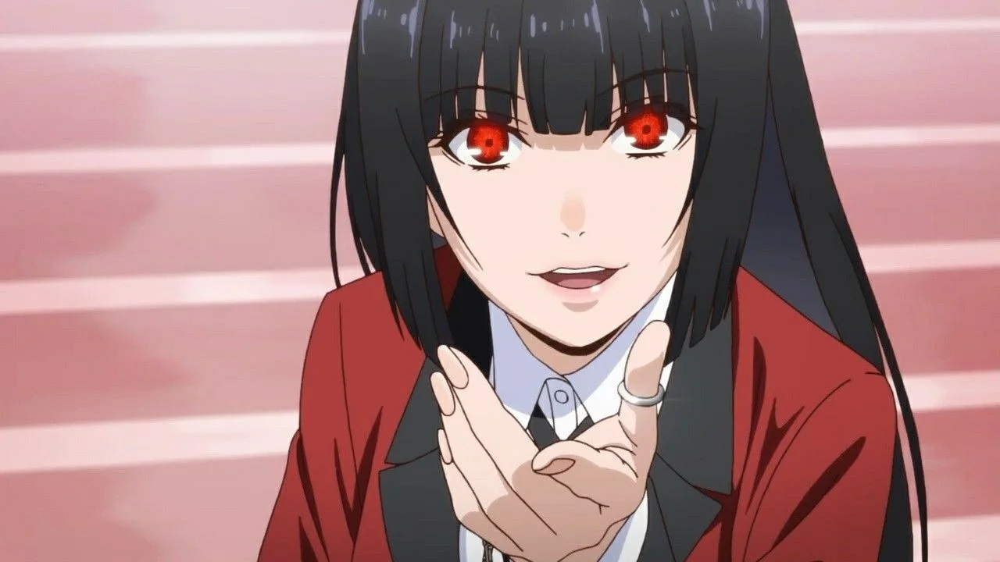
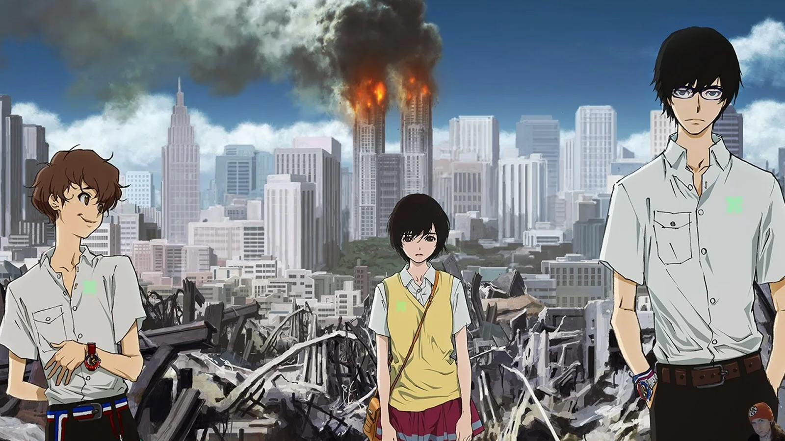

La trama de esta serie es surrealista pero tremendamente adictiva. Con un ritmo trepidante, nos cuenta el funcionamiento de una escuela privada en la que el destino de las alumnas se decide mediante apuestas terroríficas y juegos de azar. En muchas ocasiones nos encontraremos tensos mientras se apuestan las uñas de los dedos o cosas similares. En cada capítulo viviremos un juego nuevo, con sus propias reglas y lagunas, lo que hará que encadenemos un episodio tras u otro sin darnos cuenta.
En los doce episodios en los que se concentra esta historia, Nine y Twelve llevan el existencialismo adolescente a su máximo exponente. Son dos terroristas que amenazan Tokio, y poco a poco iremos descubriendo su trasfondo y móviles mientras el gobierno trata de darles caza. Una historia concisa y emotiva, plagada de acción y momentos tensos, perfecta para hacer maratón un fin de semana.
